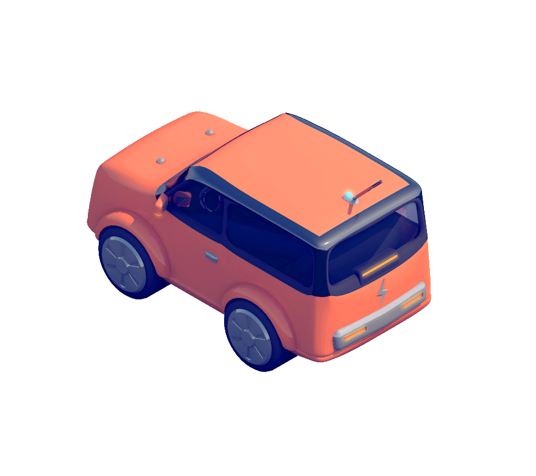
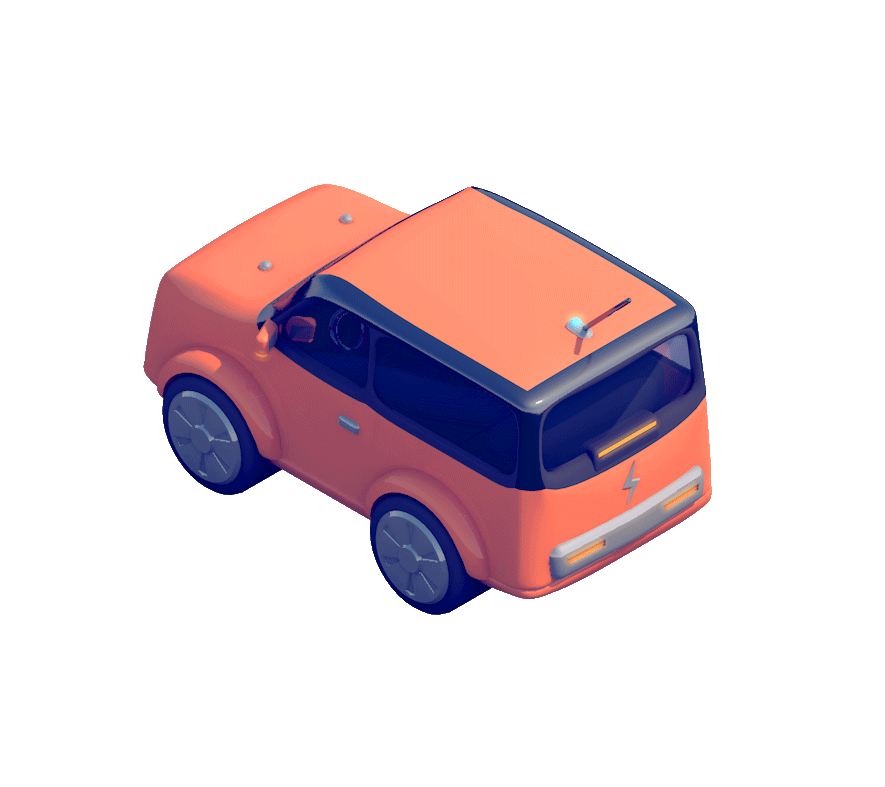

Datos Imparables
para AplicacionesImparables
Streamr tokeniza los datos de transmisión para permitir una nueva forma para que las máquinas & las personas intercambien en una red P2P descentralizada.


¿Cómo Funciona?
punto de carga cercanos
nivel de batería
 
Mira un video explicativo de 2 minutos
El Sistema Streamr
Las Piezas de Nuestra Tecnología y Caja de Herramientas

Editor Visual
Visual Editor
Motor de Streamr
Streamr Engine
Mercado de Datos
Data Market
Red Streamr

Streamr Network
Smart Contracts

Smart Contracts
Ethereum
Ethereum
Conoce Al Equipo

Henri Pihkala
Fundador, CEO
Risto Karjalainen
COO
Nikke Nylund
Fundador
Matt Innes
Director de Diseño
Shiv Malik
JEFE DE COMUNICACIONES

Amandine Flachs
Community Manager
Eric Andrews
Desarrollador
Juuso Takalainen
Desarrollador

Aapeli Haanpuu
Desarrollador

Mariusz Roliński
Desarrollador

Saori Kajiwara
Diseñadora UI/UX
Michael Malka
Proyectos de SOftware
Nuestros Asesores
Julian Zawistowski
CEO, Golem
Wendell Davis
Ethereum, Golem, OmiseGO
Thomas Greco
Ethereum, Cosmos, OmiseGO

Giotto De Filippi
ESTRATEGIA, ALIANZAS

Alex Leverington
Ethereum, Golem, ÐΞVp2p
Dr. Luka Müller
Socio Legal, MME
Nicolai Oster
Bitcoin Suisse
Kimmo Halunen
INVESTIGADOR de CIBERSEGURIDAD